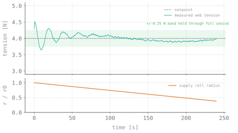

The problem
Paint protection film ships as a multi-layer roll. Eastman needed to separate only the top micro-thin protective layer without stretching it or damaging the material underneath.
Manual separation consistently produced both failure modes.
Why it was hard
The core challenge is that the supply roll diameter shrinks continuously during unwinding.
At constant angular velocity, a decreasing roll radius produces a continuously decreasing linear film velocity. The take-up roll diameter increases simultaneously, creating the opposite effect. Fixed-speed operation causes tension to drift outside the acceptable band within minutes.
A micron-thin film has a narrow acceptable tension range between slack (wandering, misalignment) and failure (tearing). Open-loop compensation cannot track the continuously changing plant dynamics.
The approach
I led the team — logistics, cross-functional coordination, system-level requirements — and wrote the control software.
- An idler motor running in tension mode, plus idler rolls along the film path, provided continuous tension feedback.
- The C++ control loop read that tension in real time against a setpoint band.
- When tension rose past the band, the loop commanded the velocity motor to adjust roller speed and reduce pull force. When it dropped, the reverse.
- Roll radius change is handled implicitly — regulating tension directly means the loop never needs to know the radius at all.
I also authored the technical data package — assembly drawings through specifications — for the prototype-to-production handoff.

Technical stack
Engineering challenges
Time-varying plant dynamics
Effective system gain shifts as roll inertia decreases during unwinding. Controller gains that provide stable response at full roll can produce oscillatory behavior at reduced diameter.
Sensor noise vs. responsiveness
Aggressive signal filtering introduces phase lag — with a micron-thin film, delayed response leads to tearing. Insufficient filtering causes the controller to respond to measurement noise.
Hardware-software integration
Integrating a real-time control loop with a student-built physical prototype introduced schedule and reliability challenges that required careful coordination between mechanical assembly and software development.
Production handoff
A working prototype is not a deliverable without documentation. A complete technical data package — drawings, specifications, and assembly procedures — was required for the prototype-to-production transition.
Results
- Control logic held tension through the full unwind, continuously adjusting roller velocity.
- Eliminated manual calibration entirely.
- Stopped the thin-film tearing.
- Met Eastman's speed and precision requirements for the production line.
- Delivered a complete technical data package for the prototype-to-production transition.
What I learned
Regulating the controlled variable directly (tension) rather than a proxy (computed speed from estimated radius) yields simpler control logic with fewer model assumptions and greater robustness to parameter uncertainty.
Simultaneously leading a team and owning the most complex technical subsystem creates resource conflicts. Delegating the control implementation earlier would have improved schedule performance.